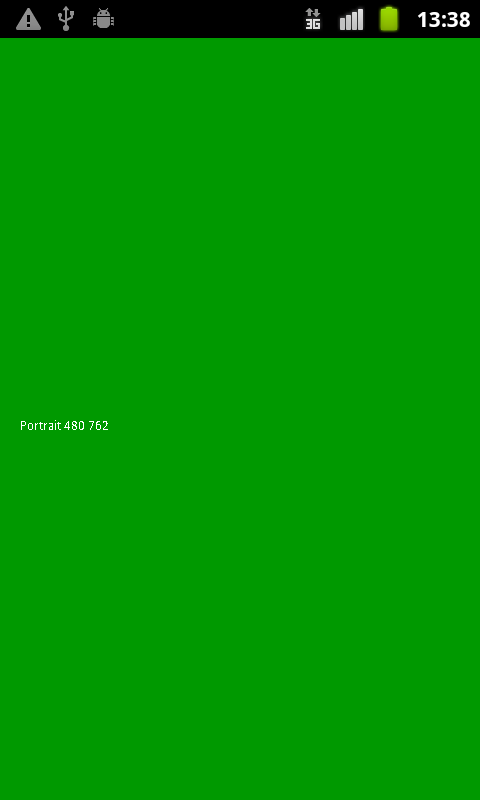

This is a well-commented example application for beginners. It demonstrates how to detect and respond to changes in screen orientation, and also how to set the orientation mode on platforms that support it. This application is based on the MoSync Moblet framework.
|  |
This example is included in the MoSync SDK installation in the /examples folder. For information on importing the examples into your workspace, see Importing the Examples.
The application draws the screen size and orientation. Turn the device. The screen will repaint showing the new values.
Examine the source code of the application to learn how the program works.
Note the use of the maScreenSetSupportedOrientations syscall to set the screen orientation mode. For platforms that support it, this sycall enables you to lock the orientation mode to just portrait or landscape mode, or to enable switching between them (dynamic mode).